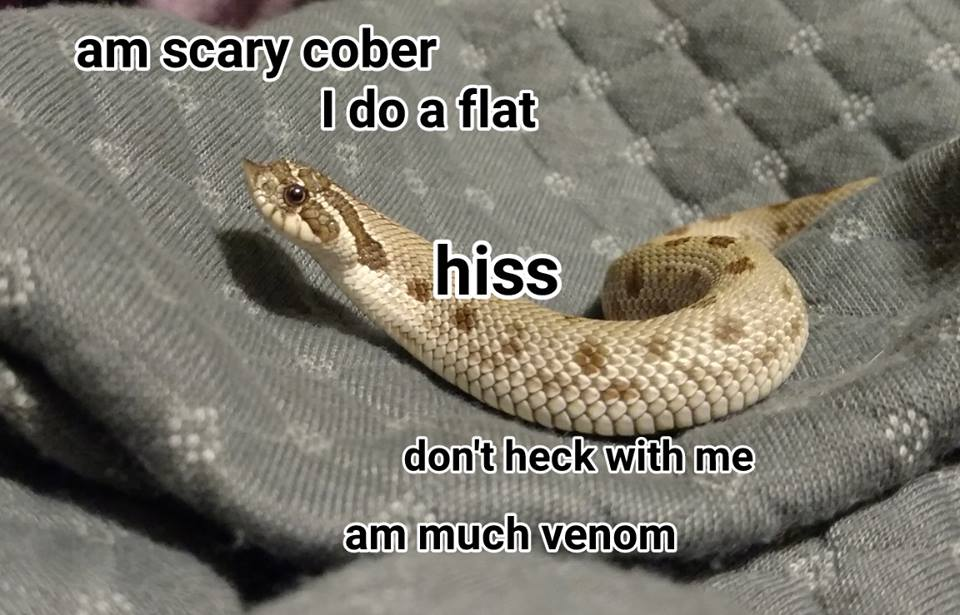

Which animal would you like to learn about
Turtles are reptiles of the order Testudines (or Chelonii[3]) characterised by a special bony or cartilaginous shell developed from their ribs and acting as a shield.[4] "Turtle" may refer to the order as a whole (American English) or to fresh-water and sea-dwelling testudines (British English).
Snakes are elongated, legless, carnivorous reptiles of the suborder Serpentes.[2] Like all squamates, snakes are ectothermic, amniote vertebrates covered in overlapping scales. Many species of snakes have skulls with several more joints than their lizard ancestors, enabling them to swallow prey much larger than their heads with their highly mobile jaws.

Rabbits are small mammals in the family Leporidae of the order Lagomorpha, found in several parts of the world. There are eight different genera in the family classified as rabbits, including the European rabbit (Oryctolagus cuniculus), cottontail rabbits (genus Sylvilagus; 13 species), and the Amami rabbit (Pentalagus furnessi, an endangered species on Amami Ōshima, Japan).